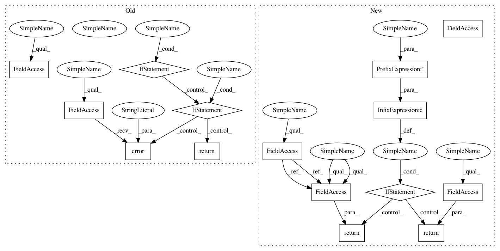

61316eb8e96fcd975f1e93da6d69f6426a3b3caf,pygsp/graphs/graph.py,Graph,is_directed,#Graph#Any#,474
Before Change
>>> directed = G.is_directed()
if hasattr(self, "force_recompute"):
if force_recompute:
self.logger.warning("Directedness for this graph is already "
"known. Recomputing.")
else:
self.logger.error("Directedness for this graph is already "
"known. Stopping.")
return self.directed
if np.diff(np.shape(self.W))[0]:
raise ValueError("Matrix dimensions mismatch, expecting square "
"matrix.")
After Change
>>> directed = G.is_directed()
if hasattr(self, "_directed") and not recompute:
return self._directed
if np.diff(np.shape(self.W))[0]:
raise ValueError("Matrix dimensions mismatch, expecting square "
"matrix.")
self._directed = np.abs(self.W - self.W.T).sum() != 0
return self._directed
def extract_components(self):
r
Split the graph into several connected components.
In pattern: SUPERPATTERN
Frequency: 3
Non-data size: 15
Instances
Project Name: epfl-lts2/pygsp
Commit Name: 61316eb8e96fcd975f1e93da6d69f6426a3b3caf
Time: 2017-08-17
Author: michael.defferrard@epfl.ch
File Name: pygsp/graphs/graph.py
Class Name: Graph
Method Name: is_directed
Project Name: epfl-lts2/pygsp
Commit Name: 61316eb8e96fcd975f1e93da6d69f6426a3b3caf
Time: 2017-08-17
Author: michael.defferrard@epfl.ch
File Name: pygsp/graphs/graph.py
Class Name: Graph
Method Name: is_connected
Project Name: epfl-lts2/pygsp
Commit Name: 61316eb8e96fcd975f1e93da6d69f6426a3b3caf
Time: 2017-08-17
Author: michael.defferrard@epfl.ch
File Name: pygsp/graphs/graph.py
Class Name: Graph
Method Name: estimate_lmax
Project Name: epfl-lts2/pygsp
Commit Name: 61316eb8e96fcd975f1e93da6d69f6426a3b3caf
Time: 2017-08-17
Author: michael.defferrard@epfl.ch
File Name: pygsp/graphs/graph.py
Class Name: Graph
Method Name: is_directed